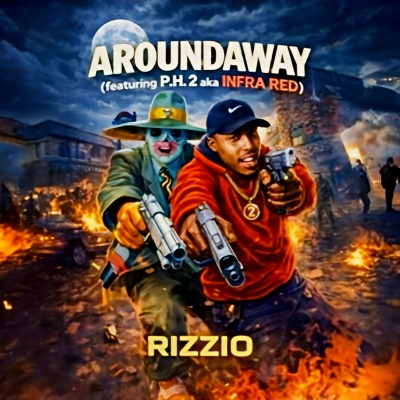

['P.H.2 aka INFRA-RED']
What do we do? We just sip brew
Come through like the smoke off a blunt
That's our challenge 9:05 is the time on the tag
So me and my homies take a yawn
Rise and shine, snatch a few bags
More bags are luck so when we do dirt
We don't get stuck
It's an everyday thing around the way that's when we wake
6 hours later we will spray
Not necessarily clips
But if you come through with your shit
You'll forfeit, just like Q-Tip
As a mad nigger, pinnacle takes you to the stage,
Giving you the limelight
You mistake yourself for Rage
But wake up 'cause you're not so you get fucked up
And act like a cool man,
'Cause if not, round the way
We'll be burning you in quicksand and you'll get shot
['RIZZIO']
Maybe your baby or maybe you're lady,
Drives you crazy all day
Best thing to do is step through to the new for you
Forget feeling blue and get into the red
It's a far better bet
Get stoned and get a bone from around da way
Less hassle per day and better by the pound
I found that there's no allegiance to the latter,
No pitter-patter of tiny feet
Or taking the bitch out on the street
It's the pure dread groove horizontal,
Or behind or whatever on the frontal
But don't miss out on that happy nappy
Or be scared of the girl's pappy,
'Cause I gets mine behind closed doors
I'm a backdoor man
You know what he said,
"No pass, no backstage head"
Yeah, I'm like that I'm coming harder
I drive a '64, no an '88,
Telling pure lies is my disguise
Because Rizzio transforms into Sir Rizz
The man with the 'Car-Rizz-ma'
He'll go far anytime there's a girl to scout
Like football managers,
I get my boys to check 'em out
Then I size them up, they're prey,
And weigh it up give 'em a fuck,
It's all okay
Because I gets mine from around the way
['P.H.2 aka INFRA-RED']
Crime number 2, that's what we must do
To wear the clothes that we do
Important tax marks by any means necessary
Consequences is state penitentiary
But slip, that don't phase us
Because like sign says, we stays
A man who will blaze through
An F my way of crime myself is dark
Don't be misguided because two of my crew remain
If not on the highway jacking cars,
Paving their way for fame in an entity that exists
In the minds of the low down criminals or are they fools
Maybe so, to the system that was geared to us
So making money will never be a intel or hard thrust
['RIZZIO']
Part 4, yeah i'm still coming for more
Coming through round the mountain
And i'm still scouting
I got your back and I slap ma-fuckers
Like in my last raps
So you better listen up 'cause when I fill up my cup
It's 100% proof
Knock your head to the roof
I like getting high above my head
I like getting high and getting red
And that's the truth just ask my bitch Ruth
She thought she was all that
But I knew deep down she wasn't bad
But she gave it a good try
So I sat by and let her have it
My dick that is,
From the alias man, Sir Rizz
Nutted her in Sir Rizz fashion
She knelt before me,
And sucked it with so much passion
Lots of jumping jack hammer action
Looked up over at the clock
It's late so I knew I was running out of 'Fuck'
'Cause I got a date elsewhere
Some I'm mo' tear it up here
And then head out,
Like I said, got me girls to scout
But that's for later 'cause I've got a greater rendezvous
I'm meeting my nigger P.H.2
Acid on the Richter scale and colour he's red
Fuck around with us man, and you end up dead
Partners from way back when in the day
'Cause we always gets ours from around da way
['P.H.2 aka INFRA-RED']
Check it out we said
Around the way is how we do
Fuckin' up yo, the master plan for you
['RIZZIO']
We always gets ours around the way
Because we run things every day
Day every tings run you because
Way the around good always it's... yeah
We gotta get ours around the way
That's how we go yeah
Acid on the Richter scale, P.H.2 and Rizzio,
Doing it for you, for '90 whatever
Because we don't give a why damn about the weather
['P.H.2 aka INFRA-RED']
All you bitches, hoes, take off your hats
And fuckin' cut your toes for Sir Rizzio's
Yeah, it's all good
['RIZZIO']
Yeah, we out, man, fuckin' Rizzio and P.H.2
With our new track, first track,
You know, "Aroundaway"
It's all good, you know what I'm saying?
Huh later